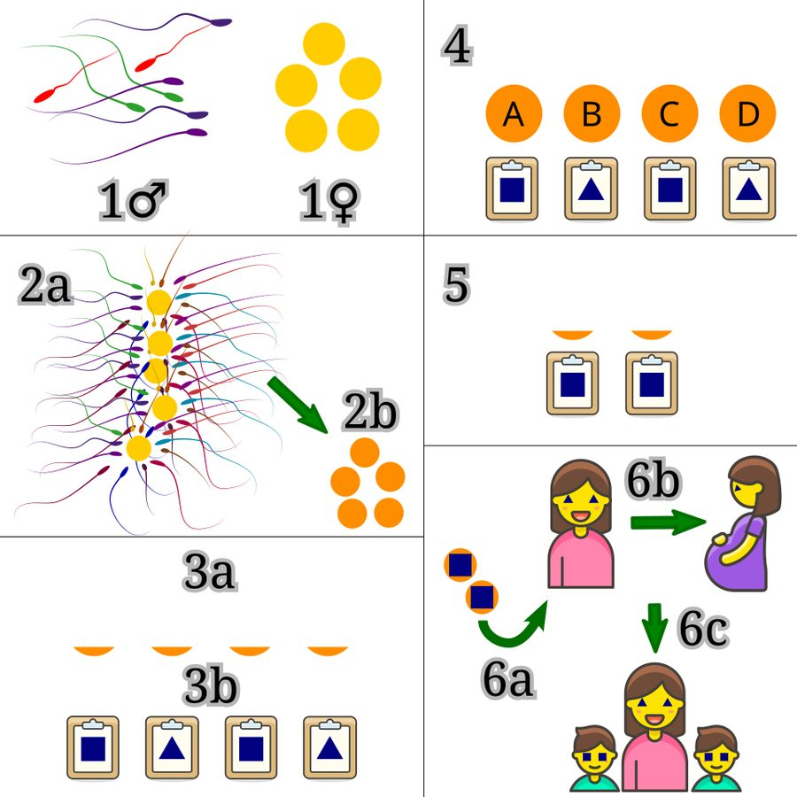

Información divulgativa. No sustituye la valoración de un profesional sanitario ni el consejo genético.
En pocas palabras
| Qué es | Fecundación in vitro con análisis genético de los embriones antes de la transferencia |
| Siglas | DGP o PGT (preimplantation genetic testing) |
| Primer embarazo | Londres, 1990 |
| En España | Regulado por la Ley 14/2006; incluido en la sanidad pública para enfermedades graves |
| Límites | No todos los ciclos tienen embriones sanos; tasa de embarazo por ciclo limitada |


Qué es
El diagnóstico genético preimplantacional combina dos técnicas: la fecundación in vitro (FIV) y el análisis genético de los embriones resultantes. Así se pueden elegir para transferir al útero los embriones que no han heredado la enfermedad de la familia. Evita a la pareja tener que plantearse una interrupción del embarazo tras un diagnóstico prenatal.
En 1990, el equipo de Alan Handyside y Robert Winston en el Hammersmith Hospital de Londres consiguió los primeros embarazos tras analizar embriones de parejas con riesgo de enfermedades ligadas al cromosoma X: seleccionaron embriones femeninos, que no podían estar afectados. Desde entonces han nacido en todo el mundo cientos de miles de niños con esta técnica.
Tipos
- PGT-M (monogénico): busca la variante concreta de una enfermedad familiar, como la fibrosis quística, la enfermedad de Huntington o BRCA1.
- PGT-SR (reordenamientos estructurales): para portadores de translocaciones cromosómicas equilibradas, que tienen más riesgo de abortos.
- PGT-A (aneuploidías): cuenta los cromosomas de los embriones. Se usa a veces en mujeres de más edad o con abortos de repetición, pero su utilidad para aumentar los nacimientos es muy discutida y las sociedades científicas no lo recomiendan de forma general.
Cómo funciona, paso a paso
- Estudio previo: se confirma la variante familiar y el laboratorio prepara una prueba específica para esa familia, lo que puede llevar varias semanas.
- Estimulación ovárica: la mujer recibe inyecciones de hormonas durante unos 10-12 días para que maduren varios óvulos.
- Punción: se extraen los óvulos con una aguja guiada por ecografía, con sedación.
- Fecundación: en el laboratorio, normalmente con microinyección (ICSI), para evitar que haya ADN de otros espermatozoides que contamine el análisis.
- Cultivo: los embriones crecen 5 o 6 días hasta la fase de blastocisto, con unas 100-200 células.
- Biopsia: se toman unas pocas células de la capa externa (el trofectodermo), que formará la placenta, no el bebé.
- Análisis genético de esas células, mientras los embriones se congelan.
- Transferencia de un embrión no afectado al útero en un ciclo posterior.
Resultados
No todas las parejas consiguen embriones sanos en el primer intento. El número de embriones depende sobre todo de la edad de la mujer, y en las enfermedades recesivas, de media, uno de cada cuatro estará afectado. La tasa de embarazo por transferencia de un blastocisto sano está en torno al 40-50 % en mujeres jóvenes, menor con la edad. A menudo hacen falta varios ciclos.
Las técnicas no son infalibles: puede haber errores por la pequeña cantidad de ADN analizado o por mosaicismo del embrión. Por eso se suele recomendar confirmar el resultado con un diagnóstico prenatal durante el embarazo.
Qué permite la ley en España
La Ley 14/2006 sobre técnicas de reproducción humana asistida permite el diagnóstico preimplantacional para:
- Detectar enfermedades hereditarias graves, de aparición precoz y no susceptibles de tratamiento curativo. En estos casos basta la autorización del centro.
- Otros casos, como enfermedades de aparición tardía o con penetrancia incompleta (por ejemplo, cáncer hereditario), necesitan la autorización de la autoridad sanitaria, previo informe favorable de la Comisión Nacional de Reproducción Humana Asistida.
- La selección de embriones compatibles para tratar a un hermano enfermo (el llamado "bebé medicamento"), también con autorización caso por caso. En 2008 nació en Sevilla el primer niño español seleccionado así, para tratar a su hermano con una anemia grave.
No está permitido elegir el sexo por motivos no médicos ni seleccionar rasgos como la estatura o la inteligencia.
La sanidad pública incluye el diagnóstico preimplantacional en su cartera de servicios para enfermedades graves, con listas de espera y requisitos de edad, que varían según la comunidad autónoma.
Las preguntas éticas
El diagnóstico preimplantacional plantea debates: qué enfermedades son "suficientemente graves", qué hacer con los embriones afectados, y el riesgo de deslizarse hacia la selección de rasgos no médicos. Algunas empresas en otros países ofrecen ya "puntuaciones poligénicas" de embriones para predecir rasgos complejos, una práctica que las sociedades científicas europeas consideran sin base científica suficiente y éticamente problemática. Se trata con más detalle en ética de la edición genética.
Ver también: Pruebas de portadores y preimplantacional, Planificar un embarazo y Donación de gametos.
Fuentes
- Handyside AH, Kontogianni EH, Hardy K, Winston RM. Pregnancies from biopsied human preimplantation embryos sexed by Y-specific DNA amplification. Nature. 1990;344(6268):768-770. doi:10.1038/344768a0
- Carvalho F, Coonen E, Goossens V, et al. ESHRE PGT Consortium good practice recommendations for the organisation of PGT. Hum Reprod Open. 2020;2020(3):hoaa021. doi:10.1093/hropen/hoaa021
- Ley 14/2006, de 26 de mayo, sobre técnicas de reproducción humana asistida. BOE-A-2006-9292